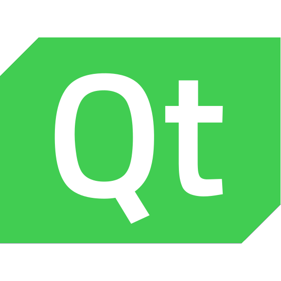
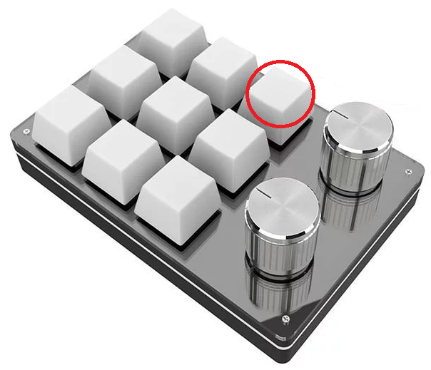

 
AGL Qt IVI Demo
AGL Qt IVI Demo is a most historical IVI demo.
That design was created at Charming Chinook (CC) in y2017. This demo is most famous demo for AGL.
Demo applications:
Media Player
Dashboard
HVAC
Voice Navigation
Phone
Radio
Setting